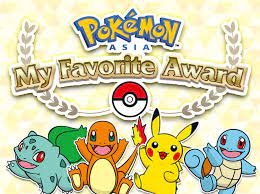
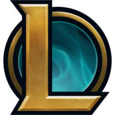

我的興趣
-
 這是我小時候第一個看到的動漫，在我第一次看到的時候覺得怎麼會有這麼有趣的東西，從此之後就對寶可夢無法自拔，曾經有一度我的夢想都是到寶可夢的世界去當訓練師。
第一個：寶可夢
-
 自從我在小學六年級接觸英雄聯盟之後，他就在我的成長中畫下了深刻的一筆，雖然隨著年紀的增長已經不再像以前一般，這麼沉迷。但只要需要遊戲紓壓時，他依舊是我的第一選擇。
第二個：英雄聯盟
-

在短暫的休閒時間，最適合找個輕鬆又簡短的影片抒發身心了。如果說玩英雄聯盟是體驗刺激的首選的話，那看YOUTUBE就是放鬆身心靈首選了，找個輕鬆又有趣的影片放鬆，會讓我在繼續做事情時更有動力喔。
第三個：看YOUTUBE
-
她是我的高職同學，在一次的因緣際會之下我跟她有了初步的認識，之後就常常一起聊天，也是因為他我才會選擇勤益作為我的第一志願，才會認識大學這群損友^_^，對我來說她就是我的幸運星，也是我的小福星。